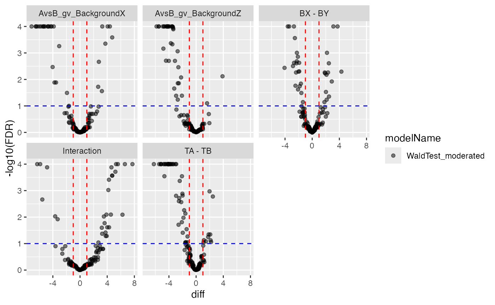
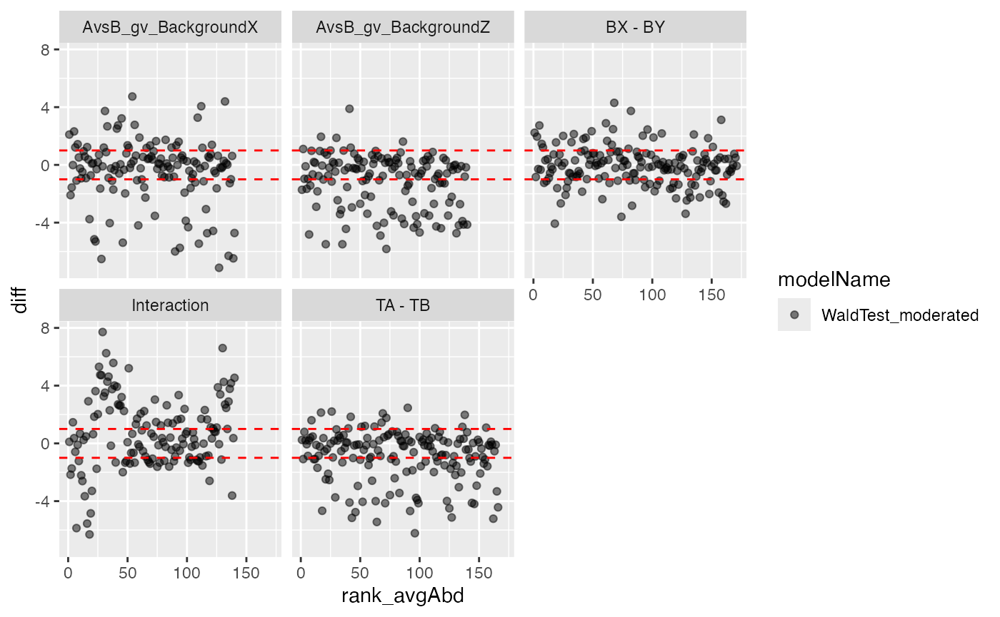

Modelling dataset with two Factors
Witold E. Wolski
2022-10-30
Source:../vignettes/Modelling2Factors.Rmd
Modelling2Factors.RmdPurpose
In this vignette we demonstrate how to integrate more than one factor into the linear models. Here, we show how to model the data with two factors plus the interaction thereof. The underlying dataset is generated in a course that is held on a yearly base. The context is that yeast is in one condition grown on glucose and in the other condition yeast is grown on glycerol and ethanol. Here we are looking into the results of two different coursess where of course different people in the wetlab and here even with different LC-MS instruments are involved. It is therefore important to include the batch variable for these two similar datasets. For demonstration purposes we are also modelling the interaction between the two explanatory variables batch and condition. In this case, having a significant interaction term would mean the protein is expressed more in the Glucose condition in one batch while the same protein is more abundant in the Ethanol condition in the other batch.
Model Fitting
For more details how the dataset data_Yeast2Factor was
created we refer you to the prolfquabenchmark vignettes. Interesting
here is the definition of the model. If interaction shall be included in
the model a asterix should be used while if no interaction
should be taken into account a plus should be used in the model
definition.
conflicted::conflict_prefer("filter", "dplyr")
data_Yeast2Factor <- prolfqua::prolfqua_data("data_Yeast2Factor")
data_Yeast2Factor <- prolfqua::LFQData$new(data_Yeast2Factor$data, prolfqua::old2new(data_Yeast2Factor$config))
pMerged <- data_Yeast2Factor
pMerged$data$Run_ID <- as.numeric(pMerged$data$Run_ID)
pMerged$factors()## # A tibble: 18 × 4
## sampleName condition_ batch_ Run_ID
## <chr> <chr> <chr> <dbl>
## 1 Ethanol~p2370~06 Ethanol p2370 6
## 2 Ethanol~p2370~08 Ethanol p2370 8
## 3 Ethanol~p2370~09 Ethanol p2370 9
## 4 Ethanol~p2370~12 Ethanol p2370 12
## 5 Ethanol~p2691~03 Ethanol p2691 3
## 6 Ethanol~p2691~06 Ethanol p2691 6
## 7 Ethanol~p2691~09 Ethanol p2691 9
## 8 Ethanol~p2691~10 Ethanol p2691 10
## 9 Ethanol~p2691~12 Ethanol p2691 12
## 10 Glucose~p2370~02 Glucose p2370 2
## 11 Glucose~p2370~04 Glucose p2370 4
## 12 Glucose~p2370~07 Glucose p2370 7
## 13 Glucose~p2370~10 Glucose p2370 10
## 14 Glucose~p2370~11 Glucose p2370 11
## 15 Glucose~p2691~04 Glucose p2691 4
## 16 Glucose~p2691~05 Glucose p2691 5
## 17 Glucose~p2691~08 Glucose p2691 8
## 18 Glucose~p2691~11 Glucose p2691 11
formula_Batches <-
prolfqua::strategy_lm("transformedIntensity ~ condition_ * batch_ ")
# specify model definition
Contrasts <- c("Glucose - Ethanol" = "condition_Glucose - condition_Ethanol",
"p2370 - p2691" = "batch_p2370 - batch_p2691",
"Glucose_vs_Ethanol_gv_p2370" = "`condition_Glucose:batch_p2370` - `condition_Ethanol:batch_p2370`",
"Glucose_vs_Ethanol_gv_p2691" = "`condition_Glucose:batch_p2691` - `condition_Ethanol:batch_p2691`",
"Interaction" = "`Glucose_vs_Ethanol_gv_p2370` - `Glucose_vs_Ethanol_gv_p2691`")
mod <- prolfqua::build_model(pMerged$data, formula_Batches,
subject_Id = pMerged$config$table$hierarchy_keys() )
mod$anova_histogram()$plot
p-value distributions for ANOVA analysis.
ANOVA
Examine proteins with a significant interaction between the two factors treatment and batch.
ANOVA <- mod$get_anova()
ANOVA |> dplyr::filter(factor == "condition_:batch_") |> dplyr::arrange(FDR.Pr..F.) |> head(5)## # A tibble: 5 × 10
## protein_Id isSin…¹ nrcoef factor Df Sum.Sq Mean.Sq F.value Pr..F. FDR.P…²
## <chr> <lgl> <int> <chr> <int> <dbl> <dbl> <dbl> <dbl> <dbl>
## 1 sp|P36095|… FALSE 4 condi… 1 11.0 11.0 79.0 9.46e-6 0.00304
## 2 sp|Q12159|… FALSE 4 condi… 1 4.86 4.86 33.9 4.46e-5 0.00715
## 3 sp|P09624|… FALSE 4 condi… 1 1.40 1.40 27.5 1.24e-4 0.0133
## 4 sp|Q08225|… FALSE 4 condi… 1 3.59 3.59 24.2 2.83e-4 0.0227
## 5 sp|P32783|… FALSE 4 condi… 1 7.90 7.90 37.4 4.85e-4 0.0312
## # … with abbreviated variable names ¹isSingular, ²FDR.Pr..F.
protIntSig <- ANOVA |> dplyr::filter(factor == "condition_:batch_") |>
dplyr::filter(FDR.Pr..F. < 0.05)
protInt <- pMerged$get_copy()
protInt$data <- protInt$data[protInt$data$protein_Id %in% protIntSig$protein_Id,]These proteins (here the top five) can easily be visualized using the
boxplot function from the plotter objects in
prolfqua
ggpubr::ggarrange(plotlist = protInt$get_Plotter()$boxplots()$boxplot)
Proteins with FDR < 0.05 for condition batch interaction in ANOVA.
Compute and analyse with the specified contrasts
contr <- prolfqua::ContrastsModerated$new(prolfqua::Contrasts$new(mod, Contrasts))
contrdf <- contr$get_contrasts()
plotter <- contr$get_Plotter()
plotter$volcano()## $FDR
plotter$ma_plot()
Analyse contrasts with missing data imputation
pMerged$config$table$factor_keys_depth()## [1] "condition_" "batch_"
contrSimple <- prolfqua::ContrastsSimpleImpute$new(pMerged, Contrasts)
contrdfSimple <- contrSimple$get_contrasts()
pl <- contrSimple$get_Plotter()
pl$histogram_diff()
pl$volcano()## $p.value
##
## $FDR
Merge nonimputed and imputed data.
dim(contr$get_contrasts())## [1] 1695 13
dim(contrSimple$get_contrasts())## [1] 2500 13
mergedContrasts <- prolfqua::merge_contrasts_results(prefer = contr, add = contrSimple)$merged
cM <- mergedContrasts$get_Plotter()
plot <- cM$volcano()
plot$FDR
Look at Proteins with significant interaction term.
sigInteraction <- mergedContrasts$contrast_result |>
dplyr::filter(contrast == "Interaction" & FDR < 0.2)
protInt <- pMerged$get_copy()
protInt$data <- protInt$data[protInt$data$protein_Id %in% sigInteraction$protein_Id,]
protInt$get_Plotter()$raster()Heatmap for proteins that are quantified only in one condition.
hm <- protInt$get_Plotter()$heatmap()
hmProteinheatmap for proteins with significant Interactions
The prolfqua package is described in (Wolski et al. 2022).
Session Info
## R version 4.2.1 (2022-06-23)
## Platform: aarch64-apple-darwin20 (64-bit)
## Running under: macOS Monterey 12.6
##
## Matrix products: default
## BLAS: /Library/Frameworks/R.framework/Versions/4.2-arm64/Resources/lib/libRblas.0.dylib
## LAPACK: /Library/Frameworks/R.framework/Versions/4.2-arm64/Resources/lib/libRlapack.dylib
##
## locale:
## [1] en_GB.UTF-8/en_GB.UTF-8/en_GB.UTF-8/C/en_GB.UTF-8/en_GB.UTF-8
##
## attached base packages:
## [1] stats graphics grDevices utils datasets methods base
##
## loaded via a namespace (and not attached):
## [1] httr_1.4.4 sass_0.4.2 tidyr_1.2.1 jsonlite_1.8.2
## [5] viridisLite_0.4.1 carData_3.0-5 bslib_0.4.0 assertthat_0.2.1
## [9] conflicted_1.1.0 highr_0.9 vipor_0.4.5 yaml_2.3.6
## [13] progress_1.2.2 ggrepel_0.9.1 pillar_1.8.1 backports_1.4.1
## [17] glue_1.6.2 digest_0.6.30 RColorBrewer_1.1-3 ggsignif_0.6.4
## [21] colorspace_2.0-3 cowplot_1.1.1 htmltools_0.5.3 pkgconfig_2.0.3
## [25] pheatmap_1.0.12 broom_1.0.1 purrr_0.3.5 scales_1.2.1
## [29] tibble_3.1.8 generics_0.1.3 farver_2.1.1 car_3.1-1
## [33] ggplot2_3.3.6 ellipsis_0.3.2 ggpubr_0.4.0 cachem_1.0.6
## [37] withr_2.5.0 lazyeval_0.2.2 cli_3.4.1 magrittr_2.0.3
## [41] crayon_1.5.2 memoise_2.0.1 evaluate_0.17 fs_1.5.2
## [45] fansi_1.0.3 MASS_7.3-58.1 rstatix_0.7.0 forcats_0.5.2
## [49] beeswarm_0.4.0 textshaping_0.3.6 tools_4.2.1 data.table_1.14.4
## [53] prettyunits_1.1.1 hms_1.1.2 lifecycle_1.0.3 stringr_1.4.1
## [57] plotly_4.10.0 munsell_0.5.0 compiler_4.2.1 pkgdown_2.0.6
## [61] jquerylib_0.1.4 systemfonts_1.0.4 prolfqua_1.0.0 rlang_1.0.6
## [65] grid_4.2.1 htmlwidgets_1.5.4 labeling_0.4.2 rmarkdown_2.17
## [69] gtable_0.3.1 abind_1.4-5 DBI_1.1.3 R6_2.5.1
## [73] gridExtra_2.3 knitr_1.40 dplyr_1.0.10 fastmap_1.1.0
## [77] utf8_1.2.2 rprojroot_2.0.3 ragg_1.2.3 desc_1.4.2
## [81] stringi_1.7.8 ggbeeswarm_0.6.0 Rcpp_1.0.9 vctrs_0.4.2
## [85] tidyselect_1.2.0 xfun_0.34